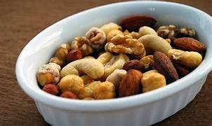
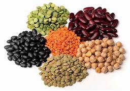
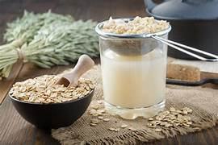
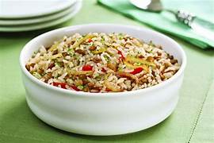

Te recomiendo una dieta rica en proteínas magras, verduras y frutas frescas, y baja en carbohidratos refinados y azúcares. Intenta hacer 5 comidas pequeñas al día y beber al menos 8 vasos de agua.
Te recomiendo una dieta rica en proteínas como pollo, pescado, huevos, y legumbres, junto con carbohidratos complejos como arroz integral y avena. No olvides incluir grasas saludables como aguacate y nueces. Bebe al menos 8 vasos de agua y come 5 veces al día.
Te recomiendo una dieta equilibrada con una variedad de alimentos de todos los grupos alimenticios: proteínas, carbohidratos, y grasas saludables. Come 4-5 veces al día y asegúrate de beber suficiente agua.
Te recomiendo una dieta basada en alimentos naturales y frescos, evitando alimentos procesados. Incluye muchas verduras, frutas, granos enteros, y proteínas magras. Mantente hidratado/a y come al menos 5 veces al día.
